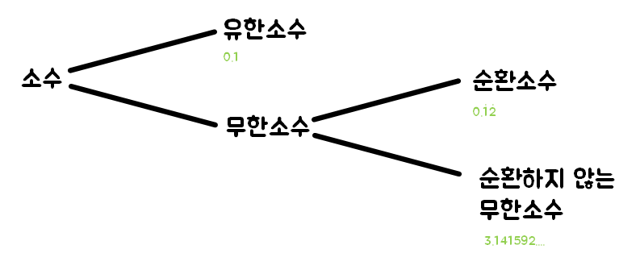

순환소수
유한소수와 무한소수
소수 중에서도 소수점 아래의 0이 아닌 숫자가 유한 번 나타나는 수(예시 : 0.25, 0.7)
소수 중에서도 소수점 아래의 0이 아닌 숫자가 무한 번 나타나는 수(예시 : 0.3333...., 3.1415....)
순환소수
무한소수 중에서 0.121212..., 5.423423...와 같이 소수점 아래의 어떤 자리에서부터 일정한 숫자의 배열이 한없이 되풀이되는 것을 순환소수라고 한다.
이때, 한없이 되풀이되는 가장 짧은 한 부분을 순환마디라고 한다. 예를 들어, 0.121212의 순환마디는 12, 5.423423의 순환마디는 423이다.
또한, 순환소수는 그 순환마디의 양 끝의 숫자 위에 점을 찍어 다음과 같이 간단히 나타낸다.
